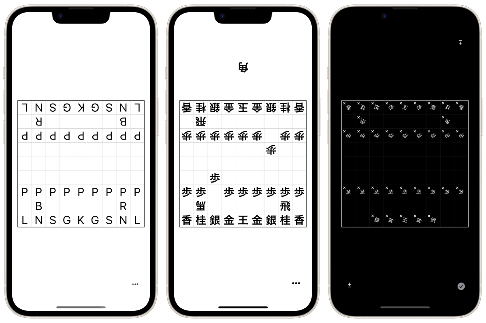
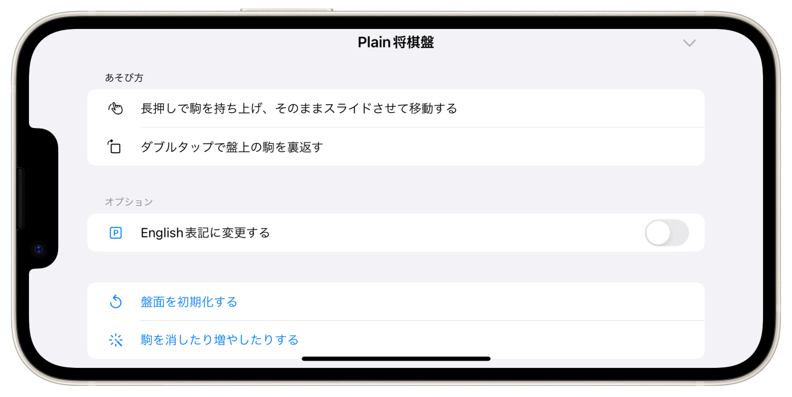

Найпростіший додаток для дошки для сьогі


Це звичайна дошка для гри в сьогі з фігурами, які можна вільно пересувати. Додаток для iPhone та iPad.
Простий додаток для гри в сьогі, який відповідає стандартному дизайну iOS.
Розмір і товщина тексту змінюється відповідно до системних налаштувань операційної системи.
Ви можете видалити або додати будь-який фрагмент.
П'єси можуть бути змінені на англійську нотацію.

Дошку можна експортувати та імпортувати у вигляді текстових даних.
☗角͙
－－－－－－－－－
香͙桂͙銀͙金͙王͙金͙銀͙桂͙香͙
飛͙
歩͙歩͙歩͙歩͙歩͙歩͙ 歩͙歩͙
歩͙
歩
歩歩 歩歩歩歩歩歩
馬͙ 飛
香桂銀金王金銀桂香
－－－－－－－－－
☖
Безкоштовно
Приховати оголошення (¥320)